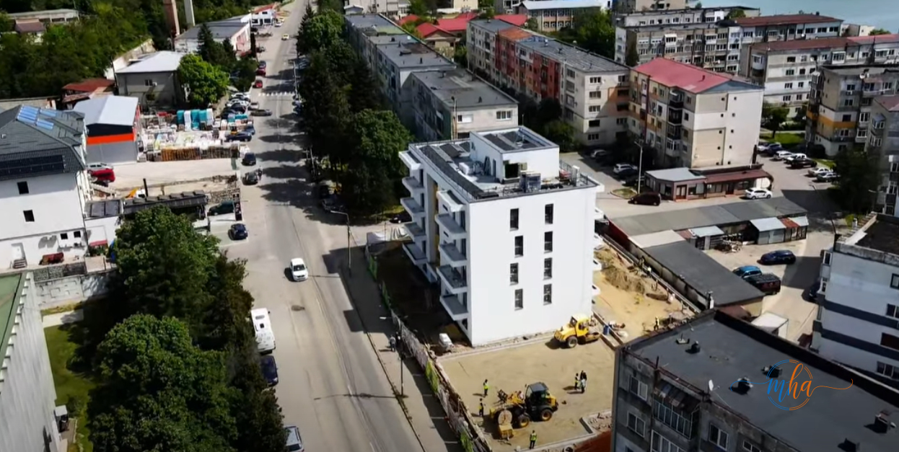
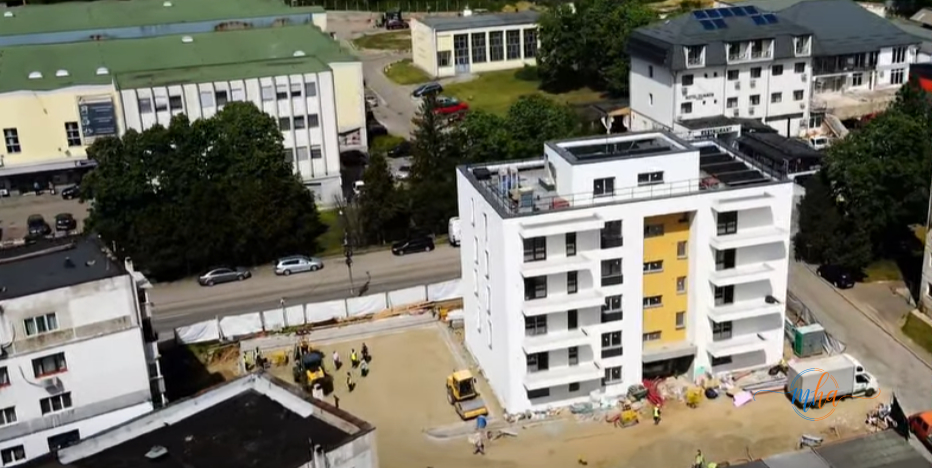
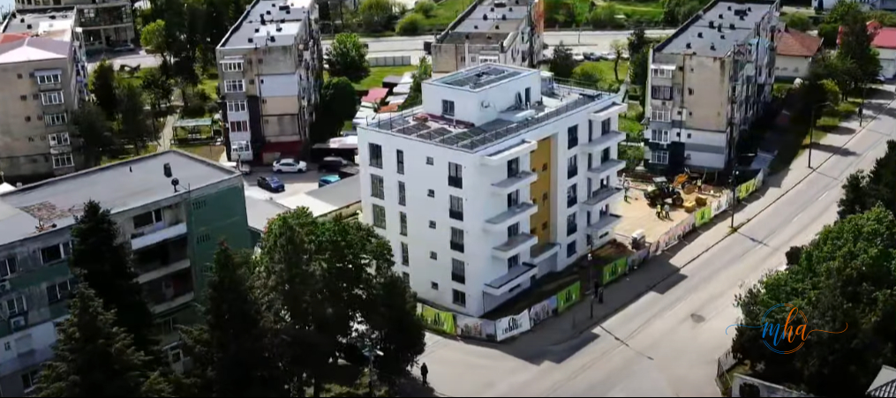
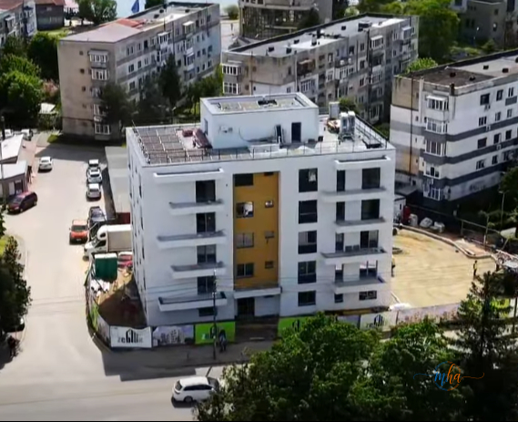

Orșova, județul Mehedinți. La 11 luni de la demararea lucrărilor, unul dintre cele mai ambițioase proiecte rezidențiale din sudul României avansează într-un ritm care confirmă atât capacitatea echipei din teren, cât și viziunea celor care l-au conceput. Firma Zeblex, cu sediul în Mehedinți, construiește în Orșova un ansamblu rezidențial cu standard nZEB — Nearly Zero Energy Building — un concept care definește viitorul construcțiilor moderne în Europa.
Într-o perioadă de mai puțin de un an, un plan a devenit realitate prin muncă susținută, organizare riguroasă și implicare constantă a tuturor celor care contribuie la acest proiect. Fiecare etapă finalizată este dovada că în Mehedinți se poate construi la standarde înalte, cu responsabilitate și respect față de beneficiari.
Ce înseamnă un proiect rezidențial nZEB
Termenul nZEB — Nearly Zero Energy Building — desemnează o clădire cu consum de energie aproape zero, un standard impus de directivele europene pentru toate construcțiile noi. Nu este un simplu certificat verde obținut pe hârtie — este rezultatul unor decizii concrete luate în fiecare etapă de proiectare și execuție: izolație termică de înaltă performanță, tâmplărie cu pierderi minime de căldură, sisteme inteligente de ventilație cu recuperare de căldură, producere locală de energie din surse regenerabile.
🏠 Ce aduce standardul nZEB unui locatar
- ⚡ Facturi la energie reduse cu până la 60-80% față de o clădire convențională
- 🌡️ Confort termic constant — cald iarna, răcoare vara, fără fluctuații
- 💨 Calitate superioară a aerului interior prin ventilație controlată cu recuperare de căldură
- 🔇 Izolație fonică îmbunătățită — liniște în interiorul locuinței
- 📈 Valoare imobiliară mai mare — clădirile nZEB sunt mai căutate și mai greu de devalorizat
- 🌱 Amprentă de carbon redusă — consum minim de energie din surse convenționale
Pentru județul Mehedinți, un proiect rezidențial nZEB reprezintă mai mult decât o construcție — este un semnal că zona se aliniază la standardele de calitate ale Europei occidentale, că există antreprenori locali capabili să livreze la cel mai înalt nivel și că viitorul locuirii în această zonă poate fi unul modern, eficient și sustenabil.
11 luni de progres constant — cum arată șantierul Zeblex din Orșova

Foto: Zeblex — Progresul lucrărilor la proiectul nZEB din Orșova, 11 luni de la start
La 11 luni de la primul lopătar de pământ, proiectul rezidențial din Orșova arată ca o promisiune îndeplinită pas cu pas. Fiecare structură ridicată, fiecare etapă finalizată, fiecare detaliu executat cu grijă spune aceeași poveste: a unei echipe care lucrează cu cap, cu inimă și cu respectul cuvenit față de viitorii locatari.
Progresul înregistrat în mai puțin de un an este rezultatul unei organizări riguroase a șantierului, al coordonării eficiente între echipele de execuție și al implicării directe a conducerii Zeblex în fiecare fază a lucrărilor. Nu s-a tăiat niciun colț, nu s-a sacrificat calitatea în favoarea vitezei — ritmul a fost susținut, dar standardele au rămas neclintite.


Foto: Zeblex — Vedere drone asupra proiectului rezidențial nZEB din Orșova, cu panourile solare vizibile pe acoperiș

Foto: Zeblex — Blocul rezidențial nZEB din Orșova — fațada modernă albă cu accente galbene, panouri fotovoltaice pe acoperiș
Zeblex — construcție cu responsabilitate în inima Mehedințiului
Zeblex este o firmă de construcții din județul Mehedinți, fondată în 2021, care și-a construit rapid o reputație solidă prin seriozitate, calitatea execuției și respectarea termenelor asumate. Proiectul rezidențial nZEB din Orșova reprezintă unul dintre cele mai complexe angajamente ale companiei până în prezent — un proiect care demonstrează că o firmă din Mehedinți poate gestiona lucrări de amploare la standarde europene.
„Construim mai mult decât clădiri. Construim încredere!"
— Zeblex
Filosofia care stă la baza activității Zeblex se traduce concret pe șantierul din Orșova: fiecare detaliu contează, fiecare etapă este executată cu atenție maximă, fiecare material este ales cu grijă. Beneficiarii unui apartament sau al unei case construite de Zeblex nu cumpără doar metri pătrați — cumpără liniștea că locuința lor va rezista în timp, că va fi eficientă energetic și că a fost construită de oameni care înțeleg ce înseamnă responsabilitatea față de client.
Un proiect important pentru Orșova și pentru Mehedinți
Orșova, orașul așezat pe malul Dunării la intrarea în Defileul Dunării, are o poveste specială: mutat complet în anii '70 pentru construirea barajului Porțile de Fier, orașul și-a păstrat spiritul comunității chiar și după această schimbare radicală. Un proiect rezidențial modern, cu standard nZEB, vine să completeze peisajul urban al Orșovei cu o componentă de calitate — locuințe care răspund cerințelor secolului XXI.
Pentru județul Mehedinți în ansamblu, prezența unui astfel de proiect pe piața locală de construcții este un semnal pozitiv. Arată că există cerere pentru locuințe de calitate, că există antreprenori locali capabili să o satisfacă și că standardele europene în construcții nu sunt apanajul exclusiv al marilor orașe din România.
📋 Date proiect — Zeblex nZEB Orșova
🏗️ Tip proiect: Rezidențial — standard nZEB (Nearly Zero Energy Building)
📍 Locație: Orșova, județul Mehedinți
🏢 Executant: Zeblex — firmă de construcții Mehedinți
📅 Avans lucrări: 11 luni de la demarare
🌱 Standard: Nearly Zero Energy Building — directivă europeană obligatorie pentru construcții noi
Mulțumiri pentru o echipă care construiește cu suflet
La 11 luni de la începerea lucrărilor, echipa Zeblex transmite mulțumiri tuturor celor implicați în acest proiect: colegilor care muncesc zilnic pe șantier indiferent de condiții, partenerilor care au înțeles viziunea și au contribuit la realizarea ei, colaboratorilor care și-au pus expertiza în serviciul acestei construcții.
Progresul înregistrat este al tuturor celor care au pus umărul — și fiecare etapă finalizată este o confirmare că proiectul merge în direcția bună, la standardele promise și cu respectul cuvenit față de toți cei care vor locui în aceste spații.
Zeblex continuă în același ritm, cu aceeași responsabilitate, până la livrarea finală a proiectului rezidențial nZEB din Orșova.